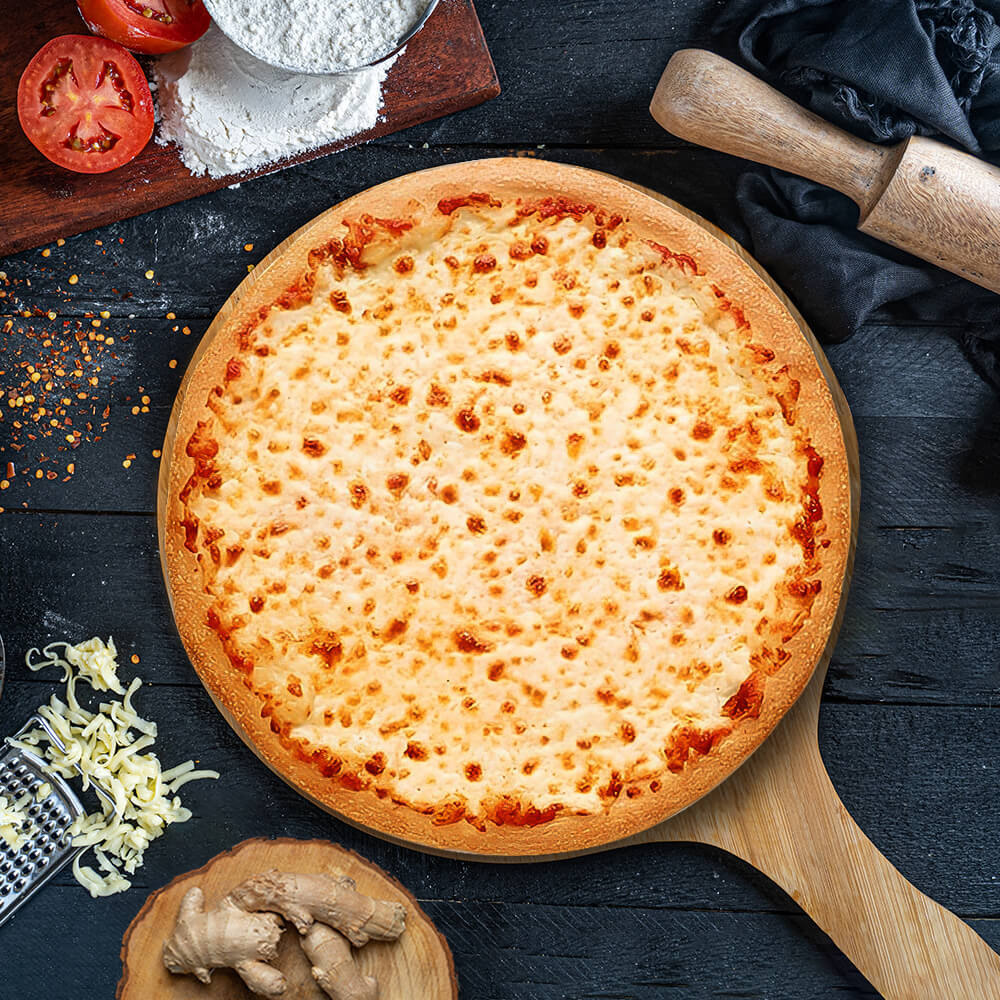
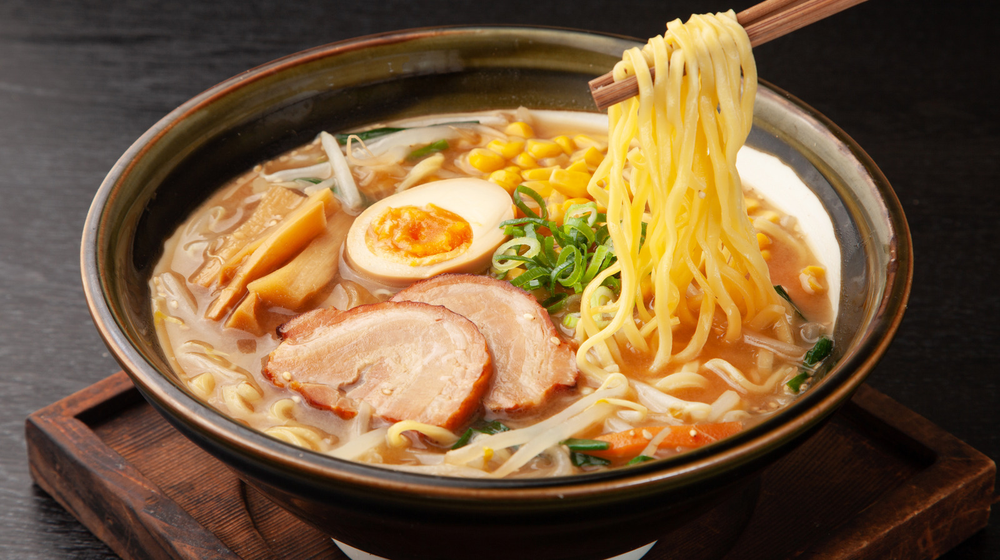

Pizza
Origin: Italy
World’s most beloved comfort food.
Source: TasteAtlas, CNN Travel

Sushi
Origin: Japan
Iconic dish of vinegared rice and raw fish.
Source: YouGov, TasteAtlas

Tacos
Origin: Mexico
Versatile street food with global fans.
Source: YouGov, CNN Travel

Ramen
Origin: Japan
Savory noodle soup with endless variations.
Source: TasteAtlas

Butter Chicken
Origin: India
Creamy tomato-based curry loved worldwide.
Source: BBC Food, YouGov